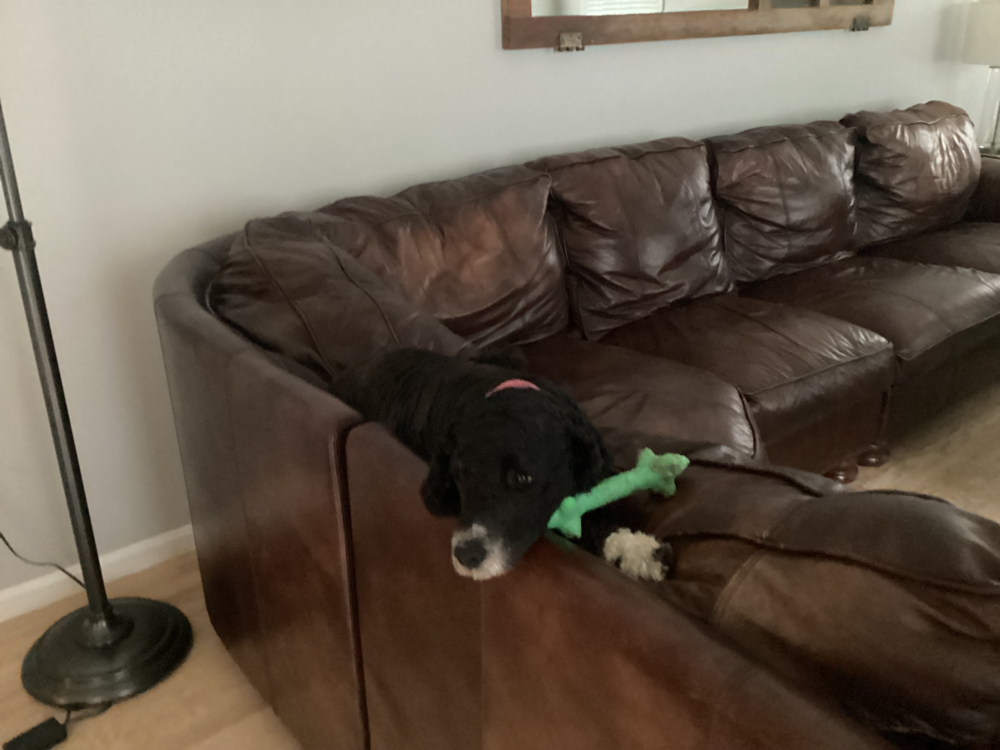
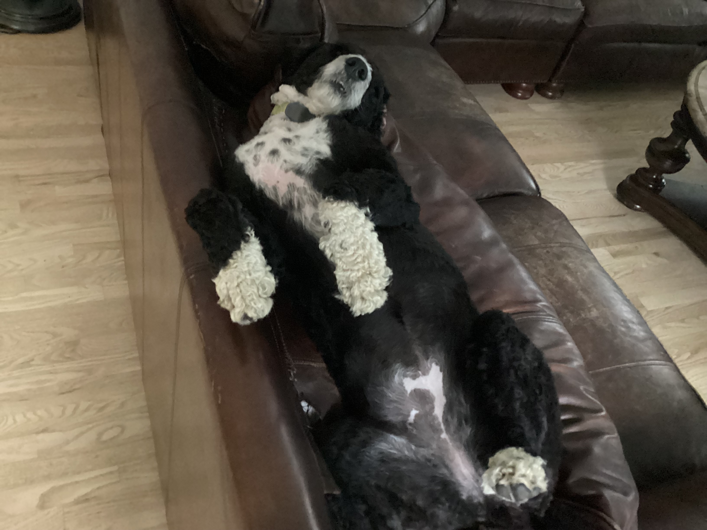

Gertie

Gertie is a spirited and adventurous black Portuguese Water Dog with a coat of slightly curly hair. She’s a bundle of energy, always ready for a new adventure or a game of fetch. Whether it's racing across the yard or diving into the nearest body of water, Gertie’s enthusiasm is infectious.
Personality:
Gertie is known for her playful and lively nature. She’s the kind of dog who never tires, always eager to chase after a ball or explore new places. Despite her high energy, Gertie is incredibly affectionate, often seeking out attention and cuddles from those she loves.
Favorite Activities:
- Swimming: Gertie has a natural affinity for water, which isn’t surprising given her breed. She can often be found splashing around in the pool, making graceful leaps into the water, and showing off her impressive swimming skills.
- Playing Fetch: One of Gertie’s absolute favorite games is fetch. Whether it’s a tennis ball, a frisbee, or a stick, Gertie’s boundless energy and speed make her a champion retriever.
- Exploring: Gertie’s curious nature means she loves exploring new places, sniffing out hidden treasures, and making every walk an adventure.
Dottie

Dottie, Gertie’s sister, is equally delightful but with a personality all her own. She sports a soft, straight coat that’s perfect for snuggling. Dottie is a gentle soul with a playful streak, making her the perfect companion for both relaxation and fun.
Personality:
Dottie is the more mellow of the two, though she’s no less playful when the moment strikes. She has a sweet, calming presence, always ready to offer a comforting nuzzle or to settle down beside you after a long day. Despite her calm demeanor, Dottie loves a good game and is always up for a swim.
Favorite Activities:
- Swimming: Like her sister, Dottie adores the water. She’s a graceful swimmer, and there’s nothing she enjoys more than gliding through the pool, her black coat glistening in the sun.
- Playing Fetch: Dottie may be softer and more relaxed than Gertie, but when it comes to playing fetch, she’s just as enthusiastic. She loves chasing after toys and always brings them back with a proud wag of her tail.
- Lounging: After a day of fun, Dottie loves to relax. Whether she’s curled up in her favorite spot or lounging in the shade, she’s the epitome of contentment.